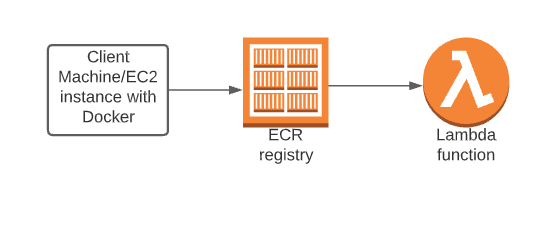

Deploying
Containerized Python Apps to AWS Lambda: A Complete Guide
Published: July 2025
By: Mohibullah Rahimi
Technical Stack: AWS Lambda, ECR, Docker, Python 3.9, IAM, Alpine Linux
The Evolution of Lambda: Why Containers Matter
The addition of Lambda support for OCI container images offers customers greater flexibility in packaging
formats. Developers can now leverage the event-driven runtime model and cost efficiency of AWS Lambda while
maintaining the predictability and control of a container-based development and deployment workflow.
Traditional ZIP Deployments
- 50MB package limit (250MB uncompressed)
- Dependency conflicts in runtime environments
- Limited to AWS-supported runtimes
- Manual dependency management
Container Image Advantages
- 10GB image support for large dependencies
- Consistent dev/prod environments
- Custom runtimes (e.g., Python 3.9 with specific patches)
- Existing Docker toolchain compatibility
Real-world use cases: This approach is ideal for machine learning models
(TensorFlow/PyTorch), legacy apps requiring specific system libraries, or monoliths being migrated to
serverless.
Implementation Architecture

End-to-end workflow from development to
production
Phase 1: Building the Container
EC2 Instance Setup
Create an Ubuntu 22.04 instance with the proper IAM role:
# Transfer files to EC2
scp -i <pem file> ./OCI.zip ubuntu@<public IP>:/home/ubuntu
# Install Docker and dependencies
wget https://d6opu47qoi4ee.cloudfront.net/dockerinstallscript.sh
bash ./dockerinstallscript.sh
sudo apt install unzip -y
unzip OCI.zip
IAM Role Requirements: The EC2 instance needs
EC2ContainerRegistryFullAccess policy to push images to ECR.
Building the Docker Image
# Build the image
docker build -t lambda_ecr .
# Verify the image
docker images

Successful Docker image creation
Phase 2: ECR Repository Setup
Creating the ECR Repository
Navigate to ECR in AWS Console and create a private repository named lambda_ecr.
Creating the lambda_ecr repository in AWS Console
Pushing the Docker Image
Use the ECR push commands to upload your container image:
# Authenticate Docker with ECR
aws ecr get-login-password --region us-east-1 | docker login --username AWS --password-stdin [account-id].dkr.ecr.us-east-1.amazonaws.com
# Tag and push the image
docker tag lambda_ecr:latest [account-id].dkr.ecr.us-east-1.amazonaws.com/lambda_ecr:latest
docker push [account-id].dkr.ecr.us-east-1.amazonaws.com/lambda_ecr:latest
Push command for Lambda, Widnows

Function overview in AWS Console
Successful test execution results
Phase 3: Lambda Function Deployment
Creating the Lambda Function
- Navigate to AWS Lambda service
- Click Create Function
- Select Container image option
- Browse and select your ECR image
- Use the existing
LabRole IAM role
- Click Create
Selecting container image option in Lambda

Configuring execution role for Lambda
Successfully pushed image in ECR repository
Function Successfully executed
Testing the Function
Cold Starts: Container-based Lambda functions may have slightly longer cold start
times than ZIP deployments. Consider provisioned concurrency for performance-critical applications.
Key Takeaways
Development Benefits
- Consistent environments from dev to production
- Larger dependency support (up to 10GB)
- Custom runtime capabilities
Operational Advantages
- Combines serverless benefits with container control
- Existing Docker toolchain compatibility
- Better dependency isolation
Best Practices
- Use multi-stage builds to reduce image size
- Implement proper IAM permission boundaries
- Monitor cold start performance
When to Use This Approach
Container-based Lambda functions are particularly valuable for:
- Machine learning models with large dependencies
- Applications requiring specific system libraries
- Teams already using containers in their workflow
- Cases where traditional ZIP deployments hit size limits
This workflow represents a powerful combination of serverless efficiency and
container flexibility, opening new possibilities for modern application development on AWS.